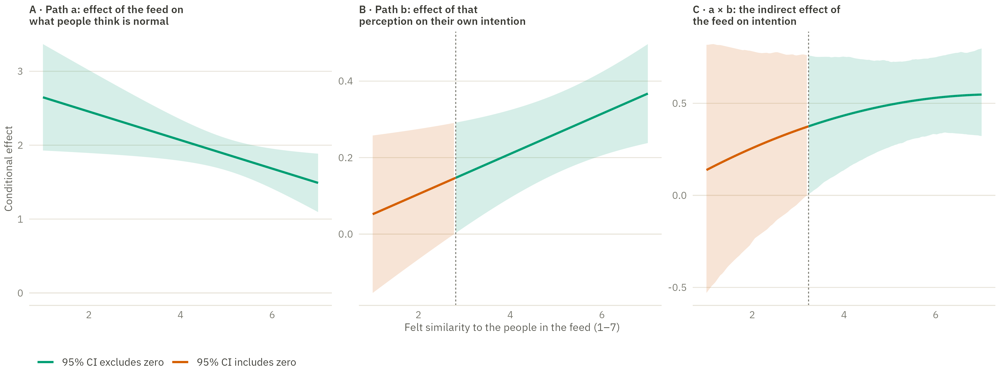

Show the R code
# The indirect effect is a product of two estimated slopes, so its interval is
# not a delta-method sum. Percentile bootstrap: resample participants, refit
# both equations, multiply, and read the quantiles off the 1000 curves.
set.seed(2026)
boot <- replicate(1000, {
s <- d1[sample.int(nrow(d1), replace = TRUE), ]
fa <- lm(norm ~ prev_vis * sim_c + prev_wri, data = s)
fb <- lm(intention ~ norm * sim_c + inj + prev_vis + prev_wri, data = s)
(coef(fa)[["prev_vis"]] + coef(fa)[["prev_vis:sim_c"]] * w_grid) *
(coef(fb)[["norm"]] + coef(fb)[["norm:sim_c"]] * w_grid)
})
panels <- c(
"A · Path a: effect of the feed on what people think is normal",
"B · Path b: effect of that perception on their own intention",
"C · a × b: the indirect effect of the feed on intention")
ce <- bind_rows(
cond_effect(m_a, "prev_vis", "prev_vis:sim_c", w_grid) |> mutate(panel = panels[1]),
cond_effect(m_b, "norm", "norm:sim_c", w_grid) |> mutate(panel = panels[2]),
tibble(w = w_grid,
est = (coef(m_a)[["prev_vis"]] + coef(m_a)[["prev_vis:sim_c"]] * w_grid) *
(coef(m_b)[["norm"]] + coef(m_b)[["norm:sim_c"]] * w_grid),
lwr = apply(boot, 1, quantile, .025),
upr = apply(boot, 1, quantile, .975),
panel = panels[3])
) |>
mutate(panel = factor(panel, levels = panels),
similarity = w + mean_sim,
sig = if_else(lwr > 0 | upr < 0, "95% CI excludes zero", "95% CI includes zero"))
# The Johnson-Neyman point is simply where that label changes.
jn <- ce |>
group_by(panel) |>
filter(sig != lag(sig, default = first(sig))) |>
slice(1) |>
ungroup()
pal_sig <- c("95% CI excludes zero" = dsvar_cat[1],
"95% CI includes zero" = dsvar_cat[3])
ggplot(ce, aes(similarity, est)) +
geom_hline(yintercept = 0, linewidth = .4, colour = dsvar_light$hairline) +
geom_ribbon(aes(ymin = lwr, ymax = upr, fill = sig), alpha = .16) +
geom_line(aes(colour = sig, group = 1), linewidth = .9) +
geom_vline(data = jn, aes(xintercept = similarity), linetype = "22",
linewidth = .4, colour = dsvar_light$muted) +
facet_wrap(~panel, scales = "free_y", labeller = label_wrap_gen(34)) +
scale_colour_manual(values = pal_sig, name = NULL) +
scale_fill_manual(values = pal_sig, guide = "none") +
labs(x = "Felt similarity to the people in the feed (1–7)",
y = "Conditional effect") +
theme(legend.position = "bottom")